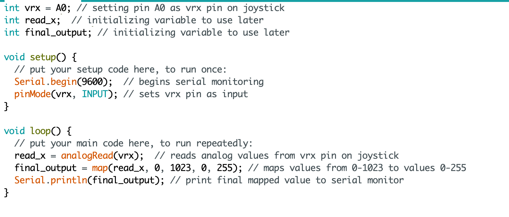

Circuit demo:

This is a gif showing how the joystick values make the webpage increase or decrease the height of the bar.
Circuit diagram:
This is an image with details regarding how the circuit is assembled.

Schematic:
This is a schematic of my circuit.
Calculations:
There were not many calculations I had to do as there were no resistors involved in this circuit. However, I did map my values from the joystick to display. I mapped values 0-1023 from the joystick to a range of 0-255 so changes are better translated in the interactive display.
Code Snippet:

This is the code that is programmed into the arduino.
This is the code that is programmed into the browser to take serial values from the arduino and display them as a graph.